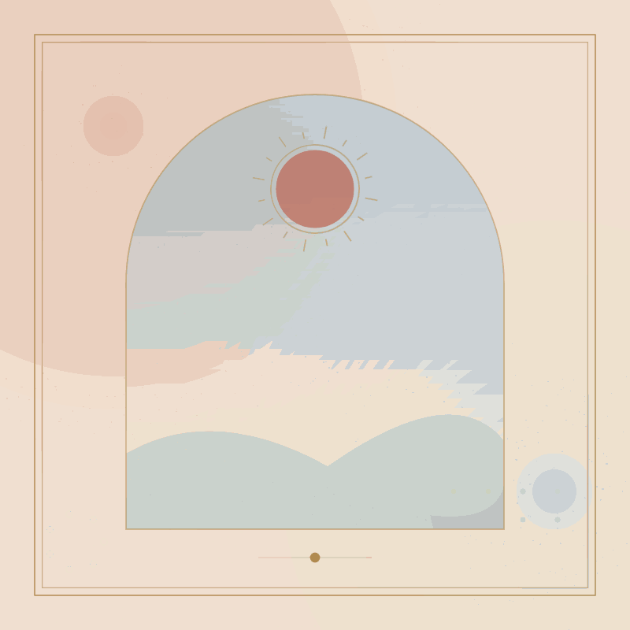
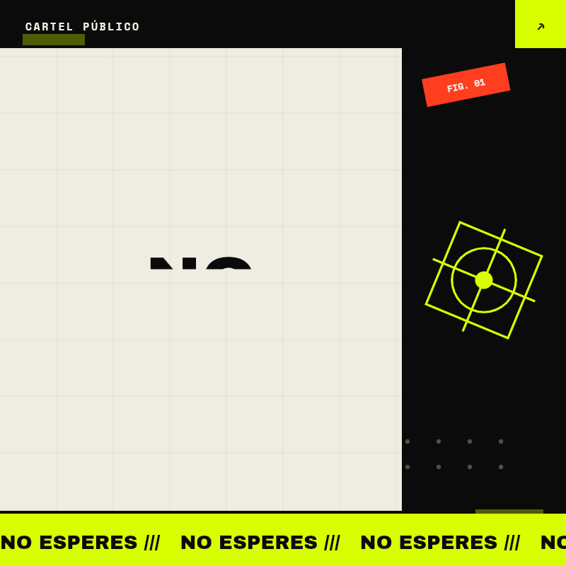
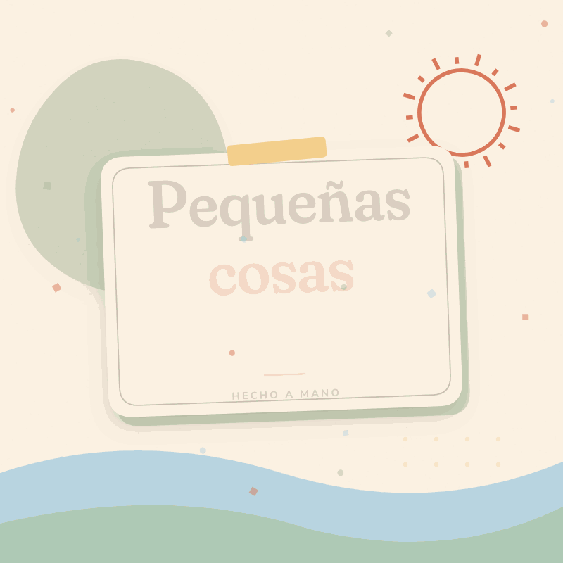
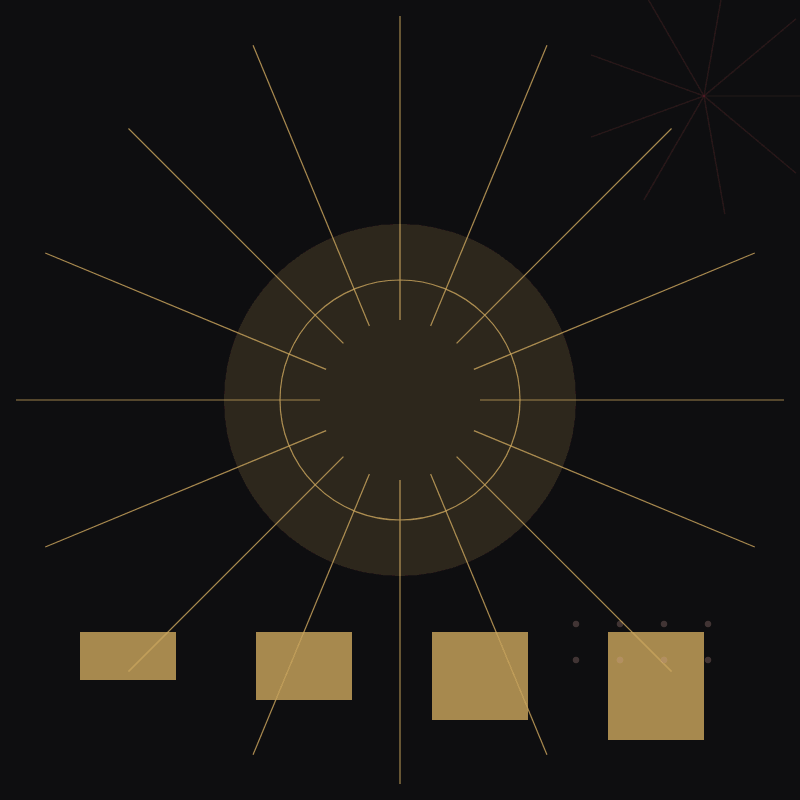
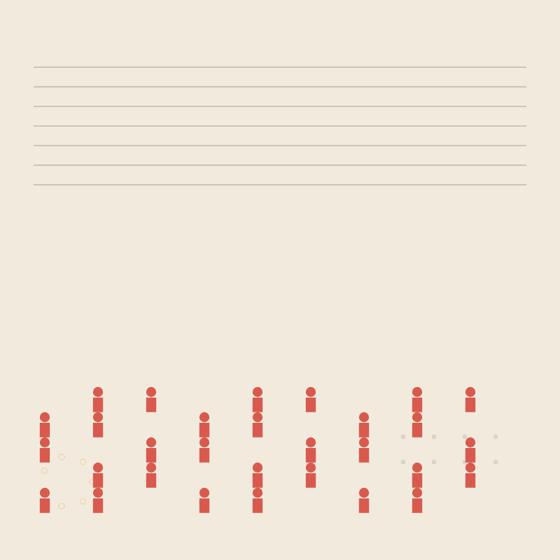
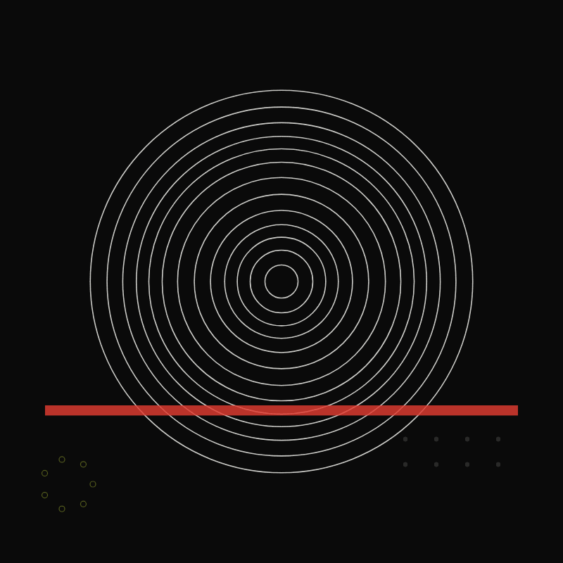
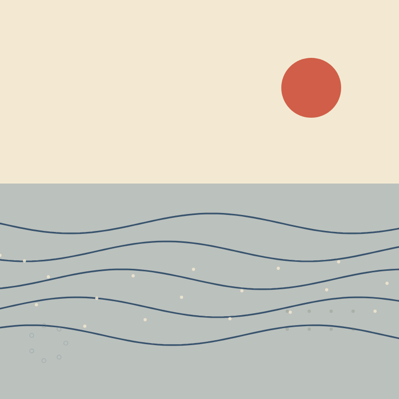
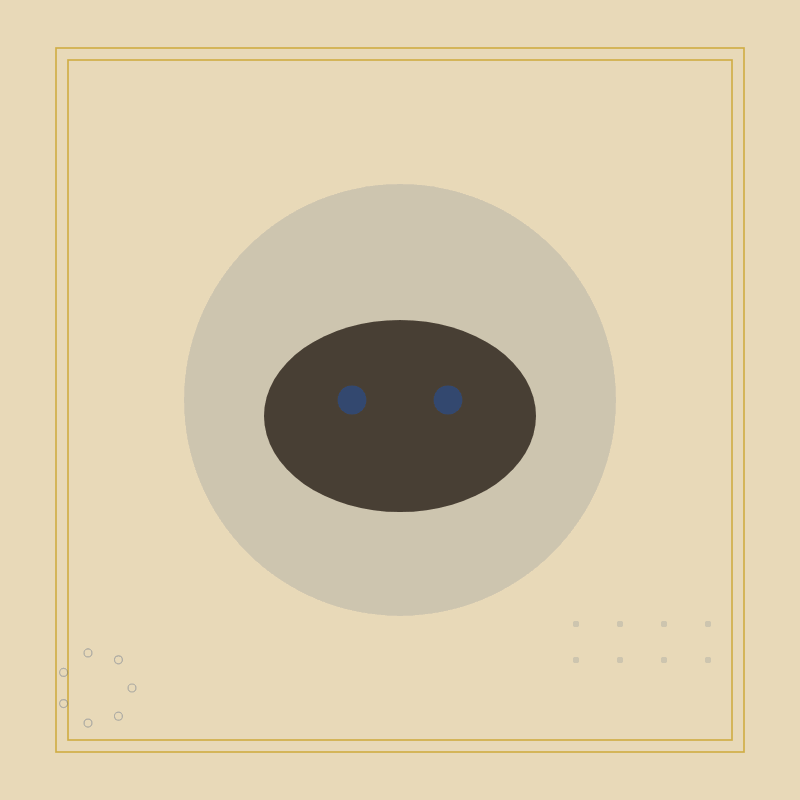
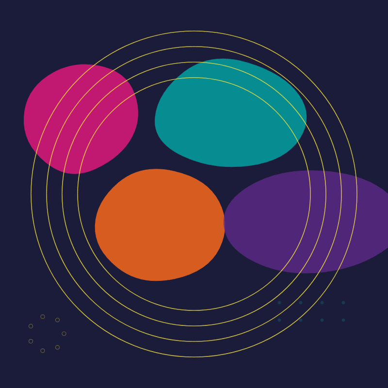
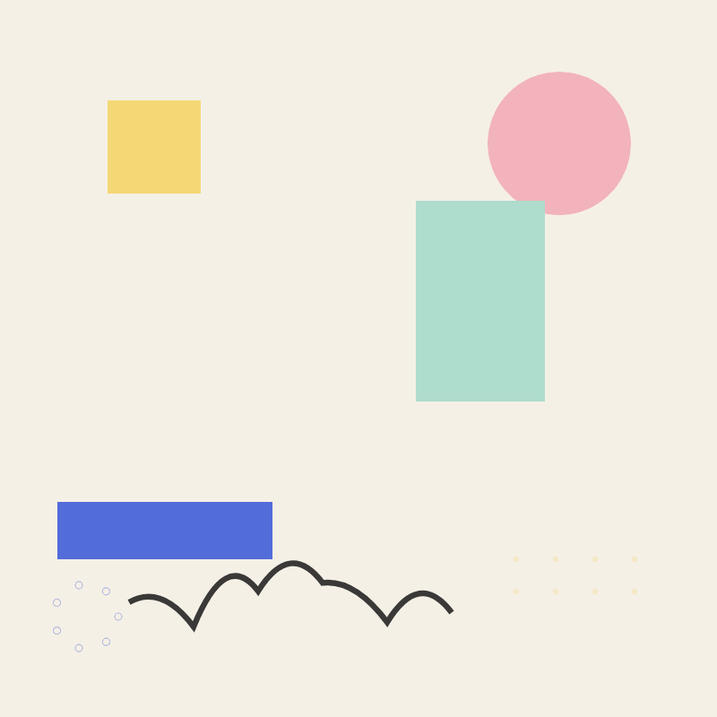
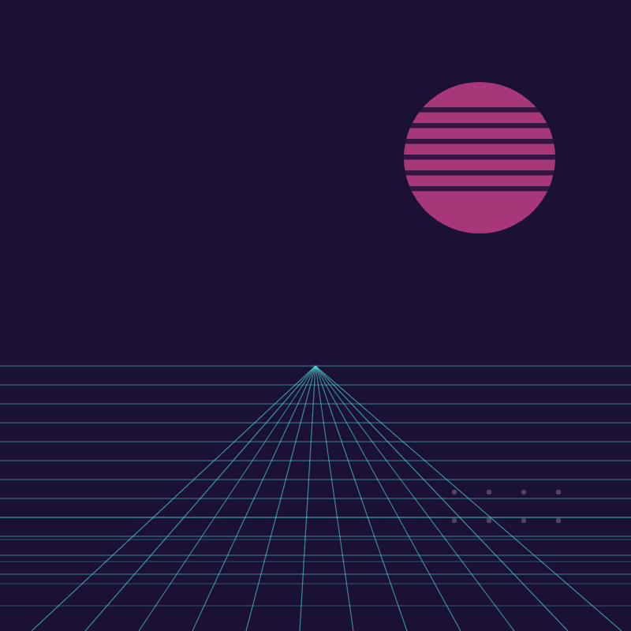
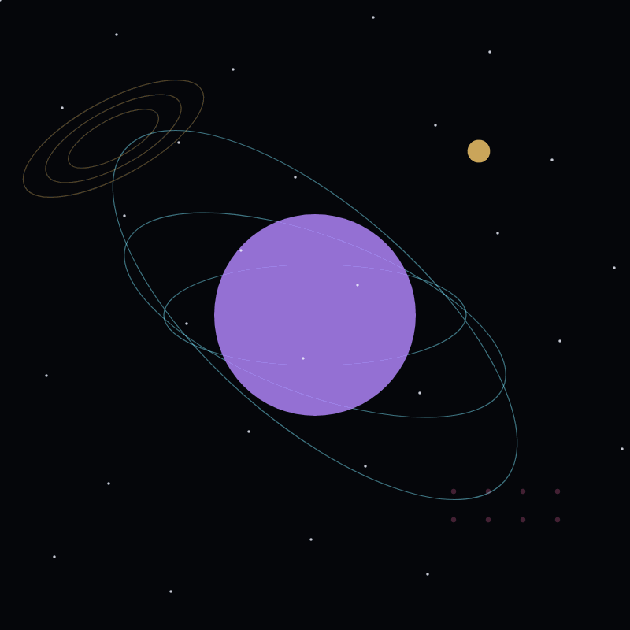
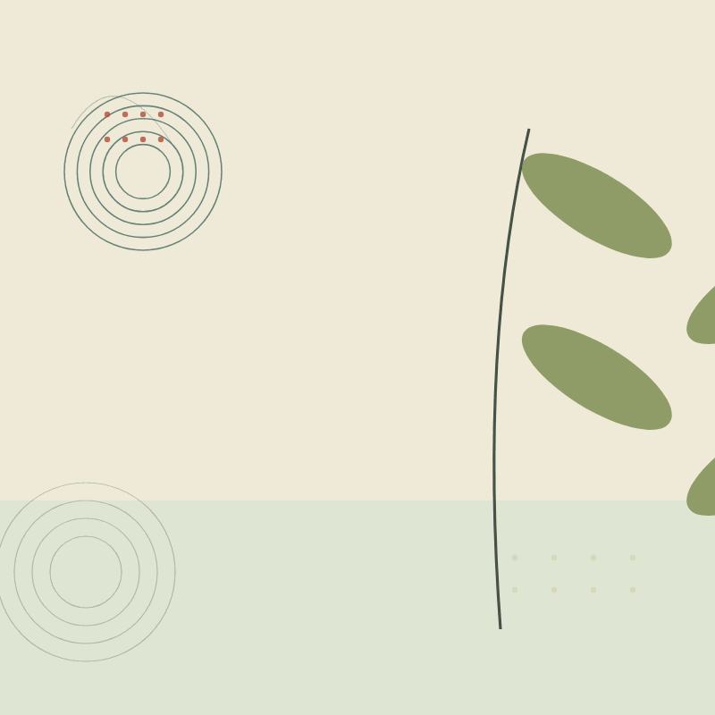
13 estilos · 800 × 800 · maxxing
Un GIF no es una página: es el umbral. Trece estilos, trece maneras de decir «entrá». Todos salieron del mismo MCP, sin HTML escrito a mano. Esta vez con la capa maxxing: más ornamento, más contraste, más aire.












